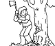

37
« Bravo chevalier! Vous êtes très bon à la lutte! Je vous redonne vos bottes. Et voici en plus un sac de pommes que nous avons cueillies ce matin dans les pommiers tout près. » Note les bottes et le sac de pommes sur une feuille et je peux ensuite continuer mon aventure.
|